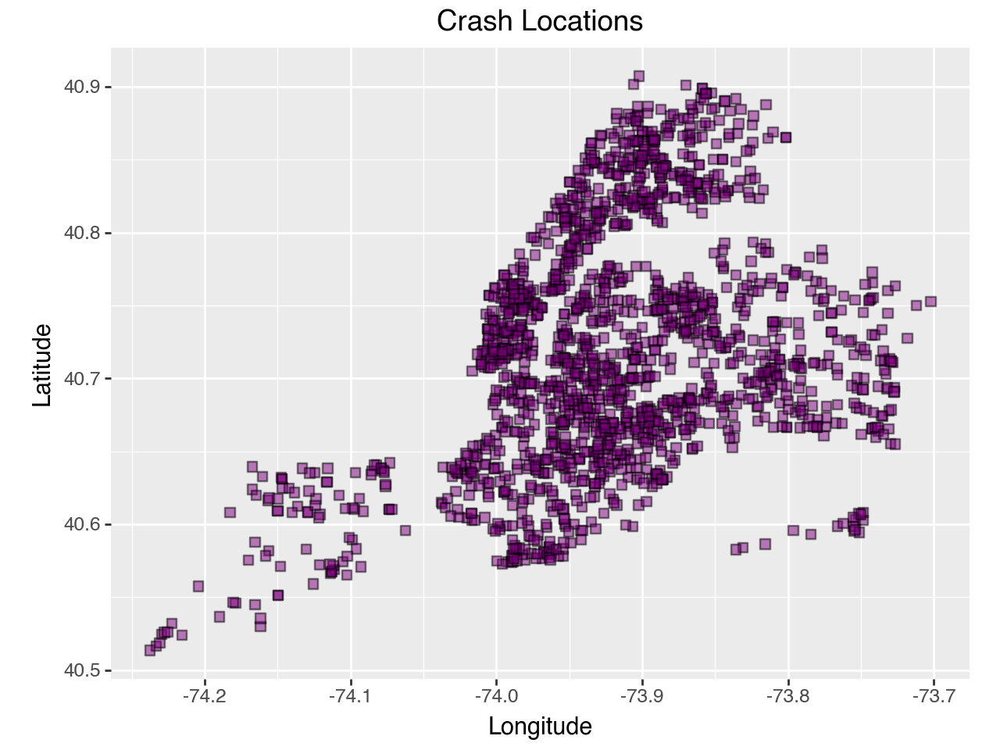
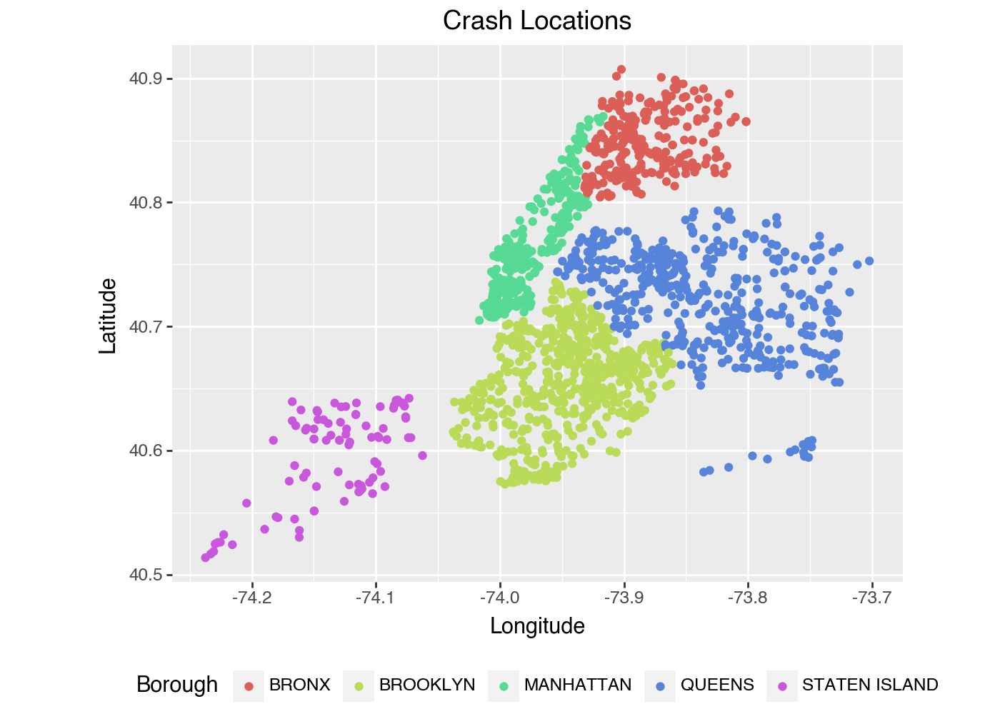
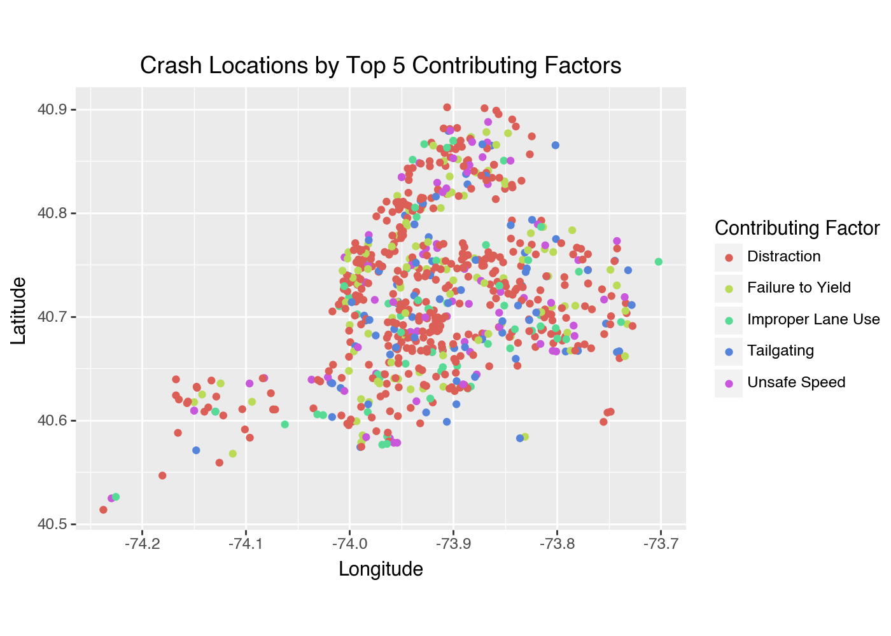
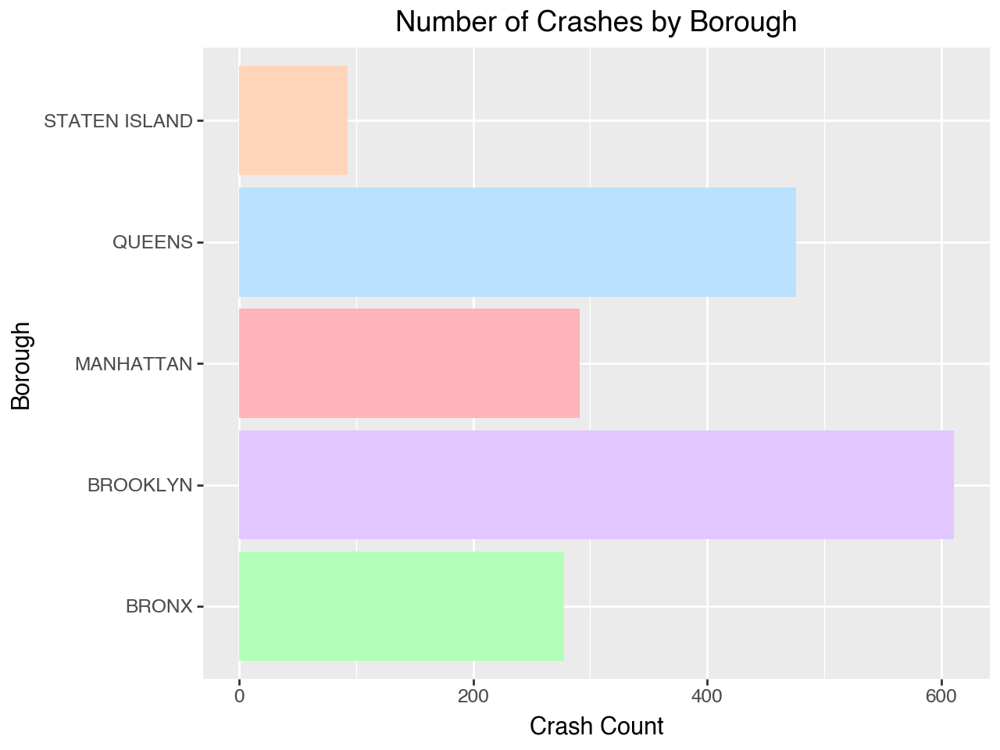
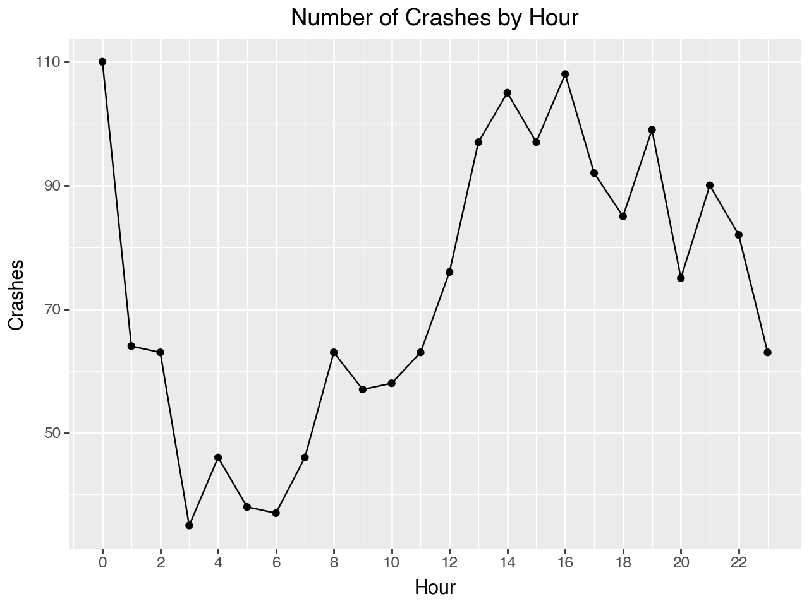
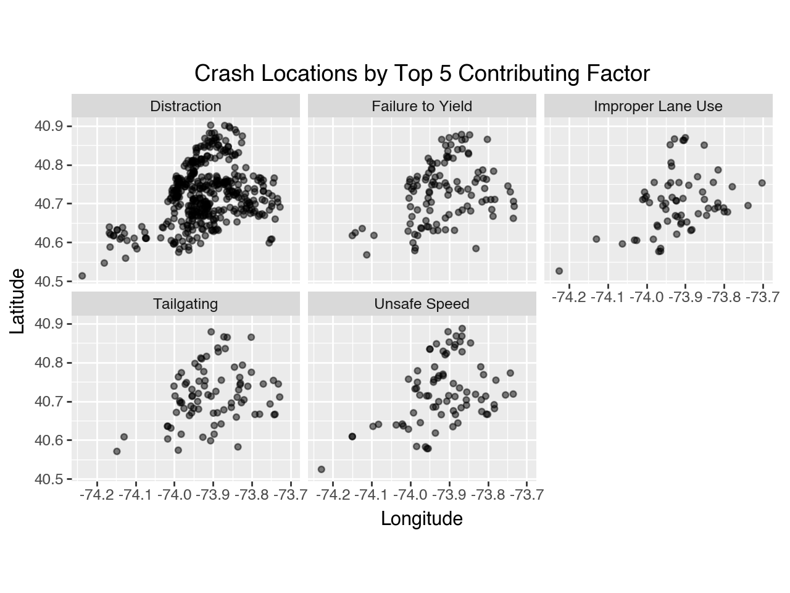
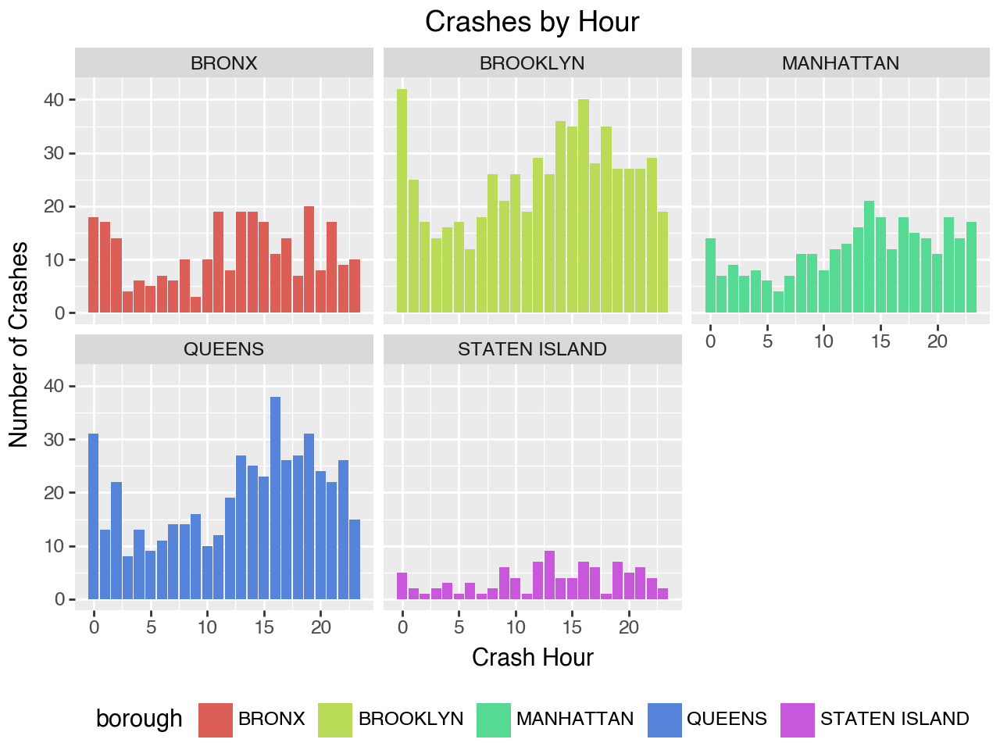

from plotnine import *7 Visualization
7.1 Data Visualization with Plotnine
This section was written by Julia Mazzola.
7.1.1 Introduction
Hi! My name is Julia, and I am a Senior double majoring in Statistical Data Science and Economics. I’m excited to show you the power of data visualization with Plotnine, a Python library inspired by R’s ggplot2. Visualization is a crucial tool to effectively communicate your findings to your audience and Plotnine is a useful library to use.
7.1.2 What is Plotnine?
Plotnine uses grammar of graphics (Wilkinson, 2012) to create layered, customizable visualizations. Grammar of graphics is a framework that provides a systematic approach to creating visual representations of data by breaking down the plot into its fundamental components. To understand this better, think about how sentences have grammar, we can layer our graphics to create complex and detailed visulizations.
Components of the layered grammar of graphics:
- Layer: used to create the objects on a plot
- Data: defines the source of the information to be visualized
- Mapping: defines how the variables are represented in the plot
- Statistical transformation (stat): transforms the data, generally by summarizing the information
- Geometric object (geom): determines the type of plot type (e.g., points, lines, bars)
- Position adjustment (position): adjusts the display of overlapping points to improve clarity
- Scale: controls how values are mapped to aesthetic attributes (e.g., color, size)
- Coordinate system (coord): maps the position of objects onto the plane of the plot, and controls how the axes and grid lines are drawn
- Faceting (facet): used to split the data up into subsets of the entire dataset
You can make a wide array of different graphics with Plotnine. Some common examples are:
- Scatterplot
geom_point() - Bar Chart
geom_bar() - Histogram
geom_histogram() - Line Chart
geom_line()
7.1.3 Installing Plotnine
To use Plotnine you must install it into your venv first. The instructions are as follows:
Type this command into either conda, your terminal, gitbash, or whatever you use for package install for your venv.
For pip:
pip install plotnine
For conda:
conda install -c conda-forge plotnine
You can import Plotnine without a prefix:
Or with with a prefix to access each component such as:
import plotnine as p9This way is generally recommended for larger projects or when collaborating with others for better code maintainability. But for simplicity in this section I will use the first method.
For the examples we will be using NYC open data to visualize motor vehicle crashes from the week of June 30, 2024.
import pandas as pd
nyc_crash = pd.read_feather('data/nyccrashes_cleaned.feather').dropna(subset=['borough'])7.1.4 Scatterplot
Firstly, we will be creating a scatterplot. This can be done with geom_point(). Our scatterplot will be displaying Crash Locations based on the longitude and latitude of the crash sites.
Creating a Basic Scatterplot
import warnings
warnings.filterwarnings("ignore", category=UserWarning)
(ggplot(nyc_crash, aes(x='longitude', y='latitude')) +
# Specifies graph type
geom_point() +
# Creates labels for graphic
labs(title='Crash Locations',
x='Longitude',
y='Latitude') +
# Because we are plotting maps we want 1:1 ratio
# coord_fixed(): changes the ratio of the x and y axis
coord_fixed(ratio = 1))Customizing a Scatterplot
You can customize your plot further by changing the color, edge color, transparency, size, or shape of your points. This is done in geom_point().
(ggplot(nyc_crash, aes(x='longitude', y='latitude')) +
# Changes what our points look like
# color= changes the outline color
# fill= changes the fill color
# alpha= changes transparency
# size= changes size
# shape= chanegs shape (s = square)
geom_point(color = 'black', fill = 'purple',
alpha = 0.5, size = 2, shape = 's') +
labs(title='Crash Locations',
x='Longitude',
y='Latitude') +
coord_fixed(ratio = 1))
This scatterplot provides a lot of information, yet there are ways we can customize our plot to be more informative for our audience. We can create a scatterplot that differentiates by contributing factor.
Changing Shape by Variables
Changing shape of points by contributing_factor_vehicle_1:
# List of top 5 reasons for the contributing facor
# Abbreviating names for clairity
factor1 = {"Driver Inattention/Distraction": "Distraction",
"Failure to Yield Right-of-Way": "Failure to Yield",
"Following Too Closely": "Tailgating",
"Unsafe Speed": "Unsafe Speed",
"Passing or Lane Usage Improper": "Improper Lane Use"}
# Filter the data to only include valid contributing factors
confact = nyc_crash.loc[nyc_crash['contributing_factor_vehicle_1'].isin(factor1)].copy()
# Change to shortened names for better visability
confact.loc[:, 'contributing_factor_vehicle_1'] = confact[
'contributing_factor_vehicle_1'
].replace(factor1)# Changes shape of point according to 'contributing_factor_vehicle_1'
(ggplot(confact, aes(x='longitude', y='latitude',
shape ='contributing_factor_vehicle_1')) +
geom_point(alpha = 0.7) +
labs(title='Crash Locations by Top 5 Contributing Factors',
x='Longitude',
y='Latitude',
shape = 'Contributing Factor',
color= 'Contributing Factor') +
coord_fixed(ratio = 1) +
theme(figure_size = (7,5)))
Changing Color by Variables
To add color coordination to your plot in Plotnine, specify the variable you want to use for coloring by including color='variable' within the aes() function. This enables you to visually distinguish different categories in your dataset, enhancing the clarity and interpretability of your plot.
Changing color of point according to borough:
# color= changhes color according to 'borough'
(ggplot(nyc_crash, aes(x='longitude', y='latitude', color = 'borough')) +
geom_point() +
labs(title='Crash Locations',
x='Longitude',
y='Latitude',
# Changes key title to 'Borough'
color= 'Borough') +
coord_fixed(ratio = 1) +
# legend_position= changes where the legend is located
theme(figure_size = (7,5), legend_position='bottom'))
As you can see, each borough is represented by its own color, allowing the audience to easily identify which borough the crash occurred in.
Changing color of points by contributing_factor_vehicle_1:
# color= changes color according to 'contributing_factor_vehicle_1'
(ggplot(confact, aes(x='longitude', y='latitude',
color ='contributing_factor_vehicle_1')) +
geom_point() +
labs(title='Crash Locations by Top 5 Contributing Factors',
x='Longitude',
y='Latitude',
color= 'Contributing Factor') +
coord_fixed(ratio = 1) +
# Changes plot size to be larger
theme(figure_size = (7,5)))
This graph uses color to distinguish what contributing factor caused the crash.
Adding Linear Regression Line to Plot
If you want to fit a linear regression line, use geom_smooth(). Adding this to your plot can be really helpful to visualize trends of your data easier. To add a linear regression line to your scatterplot, you would include the following line of code:
geom_smooth(method='lm', se=False, color='red')<plotnine.geoms.geom_smooth.geom_smooth at 0x1267e4860>7.1.5 Bar Chart
Another common use for displaying data is a bar chart. You can create one with geom_bar(). We will start with a simple chart of crashes by borough.
Creating a Basic Bar Chart
(ggplot(nyc_crash, aes(x='borough')) + # Use 'borough' for the x-axis
geom_bar(fill='purple') +
labs(title='Number of Crashes by Borough',
x='Borough',
y='Crash Count'))Customizing your Bar Chart
You can change up your bar chart a couple of different ways. You can handpick colors you want, designate it to variables, flip orientation, etc:
# Designate your preffered colors (pastel color codes)
colors = ['#B3FFBA', '#E1C6FF', '#FFB3BA', '#BAE1FF', '#FFD5BA']
# Adding fill= changes the color of bar according to variable
(ggplot(nyc_crash, aes(x='borough', fill = 'borough')) +
# Assigns your preffered colors
geom_bar(fill = colors) +
# Flips orientation of the chart
coord_flip() +
labs(title='Number of Crashes by Borough',
x='Borough',
y='Crash Count'))
Multivariable Bar Chart
You can also split up a bar chart to make it visually easier to understand.
# Using 'confact' dataset again for better visualization
(ggplot(confact, aes(x='contributing_factor_vehicle_1', fill='borough')) +
geom_bar() +
labs(title='Top 5 Contributing Factors by Borough',
x='Top 5 Contributing Factor Vehicle 1',
y='Number of Crashes',
# Changes key name to "Borough"
fill ='Borough') +
# size= creates smaller text
# angle= rotates x-axis text for readability
# figure_size= creates a larger image
theme(axis_text_x=element_text(size=9, angle=65),
figure_size= (7,7), legend_position='bottom'))7.1.6 Histogram
Another useful way to display data is a histogram. You can create one with geom_hisogram(). Using a histogram is very useful when displaying continuous data.
Basic Histogram
(ggplot(nyc_crash, aes(x='number_of_persons_injured')) +
# bins= sets the amount of bars in your histogram
geom_histogram(bins=10, alpha=0.8, fill='green') +
labs(title='Distribution of Persons Injured',
x='Number of Persons Injured',
y='Count of Crashes'))
With a histogram it is very easy to understand trends for a dataset and you can see that our NYC crash data is positively skewed.
Multivariable Histogram
Similar to bar charts, you can make Histograms that display more than one variable.
(ggplot(confact, aes(x='number_of_persons_injured', fill = 'borough')) +
# binwidth= changes width of your bars
# color= changes outline color for better visability
geom_histogram(binwidth=1, color = 'black') +
labs(title='Distribution of Persons Injured',
x='Number of Persons Injured',
y='Count of Crashes',
fill = 'Borough') +
theme(legend_position='bottom'))
Overlapping Histogram
Histograms can also be useful when comparing multiple categories. Here we are comparing Manhattan and Brooklyn’s number of persons injured with an overlapping histogram.
# Creating plot if crash is in 'MANHATTAN' or 'BROOKLYN'
(ggplot(nyc_crash[nyc_crash['borough'].isin(['MANHATTAN', 'BROOKLYN'])],
aes(x='number_of_persons_injured', fill='borough')) +
geom_histogram(bins=10) +
labs(title='Persons Injured: Manhattan vs Brooklyn',
x='Number of Persons Injured',
y='Count',
fill='Borough'))
7.1.7 Line Chart
Line charts are great for time-series data and can be created with geom_line(). This type of chart is particularly useful for identifying patterns, fluctuations, and trends, making it easier to understand how a variable changes over a specified period. We will create one analyzing Number of Crashes by Hour.
Basic Line Chart
# Finding crashes per hour
nyc_crash['crash_datetime'] = pd.to_datetime(nyc_crash['crash_datetime'])
# Extract hour
nyc_crash['crash_hour'] = nyc_crash['crash_datetime'].dt.hour
# Count crashes per hour
crash_counts = (nyc_crash.groupby(['crash_hour'])
.size().reset_index(name='crash_count'))# Plot crashes by hour
(ggplot(crash_counts, aes(x='crash_hour', y='crash_count')) +
# Creates the line chart
geom_line() +
# Adds points for better visibility
geom_point() +
labs(title='Number of Crashes by Hour',
x='Hour',
y='Crashes') +
# Formats the x-axis to display ticks by every 2 hours
scale_x_continuous(breaks=range(0, 24, 2)))
This example is excellent for understanding the grammar of graphics. As you can see, we use geom_line() to create the line chart, while also adding geom_point(), which is typically used for scatterplots, to make the figure clearer by layering additional details.
Multivariable Line Chart
Similarly to the other figures you can create a line chart with multiple variables. Now we will create a chart with number of crashes by borough.
# Setting crash counts to also include borough
crash_counts = nyc_crash.groupby(['crash_hour',
'borough']).size().reset_index(name='crash_count')
# Plots crashes by hour with different lines for each borough
(ggplot(crash_counts, aes(x='crash_hour', y='crash_count',
color='borough')) +
# size= changes the thinkness of the lines
geom_line(size=0.5) +
labs(title='Number of Crashes by Hour and Borough',
x='Hour of the Day',
y='Number of Crashes',
color = 'Borough') +
scale_x_continuous(breaks=range(0, 24, 2)) +
theme(legend_position='bottom'))
7.1.8 Faceting Your Plots
To organize your data in a way that enhances interpretability, you can utilize facet_grid() or facet_wrap(). This approach allows for the creation of separate plots based on categorical variables, making it easier to identify trends and patterns. You can facet any type of plots, scatterplots, bar charts, histograms, line charts, etc. using one or two variables.
Scatterplots per Facet
Scatterplot of Crash Locations by Contributing Factor with facet_wrap():
(ggplot(confact, aes(x='longitude', y='latitude')) +
geom_point(alpha=0.5) +
# Creates separate plots for each contributing factor
facet_wrap('contributing_factor_vehicle_1') +
labs(title='Crash Locations by Top 5 Contributing Factor',
x='Longitude',
y='Latitude') +
coord_fixed(ratio = 1))
Scatterplot of Two Variables, Crash Locations Contributing Factor and Borough with facet_grid():
(ggplot(confact, aes(x='longitude', y='latitude')) +
geom_point(alpha = 0.5) +
# Creates a grid of subplots based on the values of two variables
# ~'contributing_factor_vehicle_1' by 'borough'
facet_grid('contributing_factor_vehicle_1 ~ borough') +
labs(title='Crash Locations by Top 5 Contributing Factor',
x='Longitude',
y='Latitude') +
# Changes angle of text and size of the graphic
theme(axis_text_x=element_text(angle=90),
# sprip_text=element_text changes text size of the facet titles
strip_text=element_text(size=5.5)) +
coord_fixed(ratio = 1)) Bar Chart per Facet
Bar chart of Contributing Factors by Borough with facet_wrap:
(ggplot(confact, aes(x='contributing_factor_vehicle_1', fill='borough')) +
geom_bar() +
labs(title='Top 5 Contributing Factors by Borough',
x='Top 5 Contributing Factor Vehicle 1',
y='Number of Crashes',
fill = 'Borough') +
facet_wrap('~ borough') +
theme(axis_text_x=element_text(size=9, angle=65),
figure_size= (7,7), legend_position='bottom'))Histograms per Facet
Histogram of Crashes per Hour by Borough with facet_wrap:
(ggplot(crash_counts, aes(x='crash_hour', y='crash_count', fill = 'borough')) +
geom_bar(stat='identity') +
labs(x='Crash Hour',
y='Number of Crashes',
title = "Crashes by Hour") +
theme(legend_position='bottom') +
facet_wrap('~ borough'))
Line Chart per Facet
You can use plot each variable by on separate panels with facet_wrap().
(ggplot(crash_counts, aes(x='crash_hour', y='crash_count')) +
geom_line() +
# Breaks the figure up by borough
facet_wrap("borough") +
labs(title='Number of Crashes by Hour and Borough',
x='Hour of the Day',
y='Number of Crashes'))
7.1.9 Conclusion
Plotnine is a very powerful tool to make impactful and detailed graphics. The flexibility of its grammar of graphics approach means there are endless ways to modify, enhance, and be creative with your plots. You can layer geoms, adjust aesthetics, and apply scales, facets, and themes.
Creating Specific Plots
- Scatterplot
geom_point() - Boxplot
geom_box() - Histogram
geom_histogram() - Line Chart
geom_line() - Bar Chart
geom_bar() - Density Plot
geom_denisty()
Formatting and Customizing Your Figure:
fill: to change the color of the datacolor: to change the color of the bordersalpha: to change the transparencybins: to change the number of binsfigure_size: to change size of graphicgeom_smooth: to add a smoothed linefacet: plot each group on a separate panelfacet_wrap(): creates a series of plots arranged in a grid, wrapping into new rows or columns as neededfacet_grid(): allows you to create a grid layout based on two categorical variables, organizing plots in a matrix format
theme: change overall theme
There are many other features and customizations you can do with Plotnine. For more information on how to leverage the full potential of this package for your data visualization needs check out Plotnine’s Graph Gallery.
Happy plotting!
Further Readings
Python Graph Gallery. (2024). Plotnine: ggplot in python. Python Graph Gallery. https://python-graph-gallery.com/plotnine/
Sarker, D. (2018). A comprehensive guide to the grammar of graphics for effective visualization of multi-dimensional data. Towards Data Science. https://towardsdatascience.com/a-comprehensive-guide-to-the-grammar-of-graphics-for-effective-visualization-of-multi-dimensional-1f92b4ed4149
7.2 Spatial Data Visualization with Google Map
Hi! My name is Jack Bienvenue, a senior in Statistical Data Science.
In this section, I’ll walk you through how to begin with spatial data visualizations.
Specifically, in this section we’ll talk about using Google Maps as a tool to visualize spatial data.
We will start by talking about Google and their spatial data products, but work our way into something more aligned with our needs, which is integrating code into our Python scripts to generate Google Maps versions of our outputs.
This section will be capped off with some example code of using Google Maps to create a heatmap of crash data in New York City.
Skip to proceed to purely technical information by clicking here
Enjoy and keep learning!
7.2.1 Introducing Spatial Data
7.2.1.1 Having fun with spatial data
Spatial data handling and visualization introduces new challenges, softwares, and packages.
Spatial data operations can be time-consuming and the pathway to your desired results is often unclear.
Stay patient, have fun
Above is an example of me having fun with spatial data.
There are so many fun things to do with data visualization. Remember, you have the skillset to do things that almost nobody can! Make the most of it for yourself and for the world.
7.2.1.2 Why Spatial Data?
Spatial trends matter. They allow us to do things like:
- Understand geographic localizations of trends
- Unveil hidden trends
- Evaluate how social factors may influence trends
- Create information to address disparities
- Provide recommendations to relevant local authorities
7.2.2 Google & Spatial Data
7.2.2.1 Google Spatial Data Products:
Google offers several products for performing Geographic Information Science (GIS) tasks. These include:
- Google MyMaps
- A simple, no-code way to visualize data
- Google Earth Engine
- Enhanced computing capabilities for analytic tasks
- Google Maps Platform
- Comprehensive map construction, focused on visualization
7.2.2.2 Google MyMaps
Google MyMaps allows for visualization of line and point data.
7.2.2.3 Google Earth Engine
Google Earth Engine is used for remote sensing applications.
It uses JavaScript.
It pairs well with landcover classification to aid in tasks like:
- Landcover Classification
- Tracking deforestation
- Habitat Monitoring
- Solar Panel Identification
7.2.2.4 Google Earth Engine Example
Here’s an example of Google Earth Engine being used to identify commercial solar properties to fill in missing data:
7.2.2.5 Google Maps Platform
Google Maps Platform significantly broadens capabilities.
It allows us to perform tasks such as:
- Coalescing nearby points into clusters for zooming
- Creating heat maps from point data
- Embedding maps into websites
- Automatically translating a map into a user’s language
- 3D geospatial visualization
- and more!
7.2.3 Getting Started in Google Maps Platform
7.2.3.1 Why Google Maps Platform?
We want to be able to include maps right inside of our Python code, so Google Maps will be our platform of choice.
Google Maps Platform uses Google Cloud computing.
We must log in and do some setup there first.
7.2.3.2 Google Cloud Platform
Google Cloud Platform is accessible here.
UConn terminated Google accounts in 2024, so to access Google Cloud Console, sign in with your personal email.
7.2.3.3 Accessing the console
To access Google Maps Platform, we must enter our Google Cloud Console.
Navigate to console.cloud.google.com to view your console. It should look like this. Press “select project” and create your new project.
7.2.3.4 Building Project
→ “Select a Project”
→ “New Project”
→ Name your project, set location as ‘No Organization’
→ “Create”
→ Select newly created project
→ Next, we’ll set up an API key in the following slides
7.2.3.5 API: What is an API?
API stands for “Application Programming Interface.”
Google Maps API is a set of tools allowing us to perform tasks like:
- Visualizing data and embedding it into websites
- Route finding
- 3D map viewing
- Street view, etc.
- And more!
7.2.3.6 API: What are API keys?
An API Key allows us to access our projects exclusively
Generate an API key for your Maps project in Google Cloud here:
7.2.3.7 API: Enabling necessary APIs
In this example, we will visualize our data as a heat map. For this we will need to enable the following APIs:
- Maps JavaScript API
- Maps Datasets API
- Places API
(Select ‘APIs and Services’ from the left sidebar to access)
7.2.3.8 Python and Google Maps
Let’s begin by downloading our packages in terminal or an equivalent command shell:
% pip install googlemaps
% pip install gmplotNow we can start working with Google Maps in Python!
- googlemaps
- Provides access to Google Maps Platform services in a Python client
- gmplot
- Primarily for plotting
7.2.4 Using googlemaps and gmplot
7.2.4.1 gmplot: Initialization
We’ll use the standardized nyccrashes_cleaned.feather file provided in the coursenotes for our examples.
% pip install pyarrowimport pandas as pd
import gmplot
import os
df = pd.read_feather('data/nyccrashes_cleaned.feather')7.2.4.2 gmplot
Here’s some example code for gmplot using the cleaned NYC Crashes Dataset:
import os
import pandas as pd
import gmplot
## Load the dataset using pd.read_feather()
df = pd.read_feather('data/nyccrashes_cleaned.feather')
#NaN values prevent plotting, let's remove them:
df = df.dropna(subset=['latitude', 'longitude'])
## Insert API key (substitute with your own!)
api_key_file_path = "api_key.txt"
with open(file_path, 'r') as file:
api_key = file.read().strip()
## Center the map on NYC using the mean center
center_lat = df['latitude'].mean()
center_lon = df['longitude'].mean()
## Create gmplot object (third argument is the zoom level)
gmap = gmplot.GoogleMapPlotter(center_lat, center_lon, 11, apikey=api_key)
## Extract latitudes and longitudes directly
latitudes = df['latitude'].tolist()
longitudes = df['longitude'].tolist()
## Plot all points at once
gmap.scatter(latitudes, longitudes, marker=True, size=20, color='red')
## Define output path
output_dir = "map_outputs"
output_path = os.path.join(output_dir, "nyccrashes_map.html")
## Create the output directory if it doesn't exist
os.makedirs(output_dir, exist_ok=True)
## Save the map
gmap.draw(output_path)7.2.4.3 gmplot example code output:
You would retrieve this as an html generated in the specified directory, but for this presentation I’ll show this as an image:
7.2.4.4 gmplot: Heat Maps
Here’s some example code for a heat map:
## Now create a heatmap
## Create a new gmplot object for the heatmap
heatmap = gmplot.GoogleMapPlotter(center_lat, center_lon, 11,
apikey=api_key)
## Plot the heatmap
heatmap.heatmap(latitudes, longitudes)
## Define output path for heatmap
heatmap_output_path = os.path.join(output_dir, "nyccrashes_heatmap.html")
## Save the heatmap
heatmap.draw(heatmap_output_path)(Woods 2017)
7.2.5 gmplot Heat Map Example

7.2.6 Googlemaps
Googlemaps as a package is valuable in allowing us to access advanced functionality, beyond the scope of this write-up. Access more information here. (Google 2023)
7.2.7 Conclusion
7.2.7.1 Geospatial Visualization
There are a range of different geospatial visualization platforms.
But, using Python, you can do all the spatial visualization you need right in your code!
7.2.7.2 Thank you!
Best of luck with your spatial data visualization! Keep learning.
7.2.8 References
Woods, M. (2017). gmplot: Plotting data on Google Maps, the easy (stupid) way. URL: Https://Github.Com/Gmplot/Gmplot.
Google. (2023). googlemaps (v4.7.3) [Python package]. PyPI. https://pypi.org/project/googlemaps/
7.3 Animating Plots and Maps
7.3.1 Introduction
Hello everyone! My name is Rahul Manna. I am an undergraduate junior doing a dual degree in Statistical Data Science and Mechanical Engineering. I will be showing you how you can animate plots and maps using Matplotlib’s FuncAnimation function.
Animated maps and plots are valuable for showing changes over time or across locations, making trends and patterns easier to see. They’re useful in fields like public health, where animated maps can show how a disease spreads, or in economics, where plots can track market trends. Environmental scientists also use animated weather maps to illustrate seasonal shifts. These visuals make complex data clearer and help in understanding and decision-making.
Overview
- Matplotlib Review
- Animating Plots
- Animating Maps
- Saving your Animation
7.3.2 Matplotlib
- Developed by John D. Hunter in 2003 as a tool for scientific computing in Python.
- Initially aimed at providing MATLAB-like plotting capabilities but has evolved into one of the most widely-used plotting libraries.
Source: Hunter & Matplotlib Development Team (2023a)
Fun Fact
Matplotlib was used for data visualization during the 2008 landing of the Phoenix spacecraft on Mars and in generating the first image of a black hole (Source: Collaboration (2019)).
7.3.2.1 Installation:
To install matplotlib, you can use either of the following lines in your terminal or conda prompt respectively.
pip install matplotlib # pip users
conda install -c conda-forge matplotlib # conda users7.3.2.2 Basic Matplotlib Commands
Majority of plotting with matplotlib is done with the pyplot module which can be imported with the following code.
import matplotlib.pyplot as pltThese are some of the most common matplotlib.pyplot commands.
plt.plot(): Plot y versus x as lines and/or markers.plt.scatter(): Create a scatter plot of points.plt.bar(): Create bar charts.plt.hist(): Create histograms.plt.xlabel(): Set the label for the x-axis.plt.ylabel(): Set the label for the y-axis.plt.title(): Set the title of the plot.plt.legend(): Display a legend for the plot.plt.subplots(): Create a figure and a grid of subplots.plt.show(): Display all open figures.
Source: Hunter & Matplotlib Development Team (2023a)
7.3.2.3 Some Examples
Here are some examples of plots made using matplotlib.pyplot.
7.3.2.3.1 Coin Toss
Let’s create a line plot to show how the proportion of heads in coin tosses changes as the number of tosses increases.
import random
import matplotlib.pyplot as plt
random.seed(3255)
def prob_heads(trials):
result = []
prop_heads = []
for i in range(trials):
toss = random.randint(0,1)
result.append(toss)
prop_heads.append(sum(result)/len(result))
return prop_heads
plt.figure(figsize=(6,3))
plt.hlines(0.5,0,2500,linestyles='dashed')
plt.plot(prob_heads(2500),color='tab:red')
plt.ylim(0,1)
plt.title("Coin Toss")
plt.ylabel('Proportion of Heads')
plt.xlabel('Number of Tosses')
plt.show()7.3.2.3.2 Bar Chart
Let’s create a simple bar plot of the crashes in New York City by borough in the week of July 30, 2024.
import matplotlib.pyplot as plt
import pandas as pd
crash_data = pd.read_feather("data/nyccrashes_cleaned.feather")
crash_data = crash_data.groupby('borough')
boroughs = crash_data.groups.keys()
heights = [len(crash_data.get_group(x)) for x in boroughs]
plt.bar(boroughs,height=heights)
plt.title('Bar Plot of Crashes in NYC by Borough - 6/30/24 - 7/7/24')
plt.xlabel('Borough')
plt.ylabel('Number of Crashes')
plt.show()7.3.3 Animating Plots
7.3.3.1 Matplotlib’s FuncAnimation
from matplotlib.animation import FuncAnimationFuncAnimation is used to create animations in Matplotlib by repeatedly calling a user-defined function.
anim = FuncAnimation(fig,func,frames,interval,repeat,repeat_delay)
Key Inputs
fig: Matplotlib figure object.func: The update function for each frame.frames: Sequence or number of frames.interval: Time interval between frames (ms).repeat: Whether to repeat animation (True/False).repeat_delay: Delay before repeating (ms).
Source: Hunter & Matplotlib Development Team (2023b)
7.3.3.2 Coin Toss Animtion
Using FuncAnimation, we can animate the coin toss plot we previously made.
prop_heads = prob_heads(2500)
frames = range(len(prop_heads))
fig, ax = plt.subplots(figsize=(12,6))
def update(frame):
# Clear previous frame
ax.clear()
# Add title, and labels
ax.set_title('Coin Toss')
ax.set_ylabel('Proportion of Heads')
ax.set_xlabel('Number of Tosses')
ax.set_ylim(0,1)
# Plot data
ax.hlines(0.5,0,frame+1,linestyles='dashed')
ax.plot(range(1,frame+1),prop_heads[:frame],color='tab:red')
anim = FuncAnimation(fig,update,frames=frames,repeat=False)
anim.save('coin_toss.gif',writer='Pillow',fps=50)
plt.show()
7.3.3.3 A Step Further - Coin Toss Animation
We can take this a step further by labeling the current proportion value for each frame.
prop_heads = prob_heads(2500)
frames = range(len(prop_heads))
fig, ax = plt.subplots(figsize=(12,6))
def update(frame):
ax.clear()
ax.set_title('Coin Toss')
ax.set_ylabel('Proportion of Heads')
ax.set_xlabel('Number of Tosses')
ax.hlines(0.5,0,frame+1,linestyles='dashed')
ax.set_ylim(0,1)
# Add text
ax.text(frame+1,prop_heads[frame]*1.05,f'{prop_heads[frame]:.3f}',weight='bold')
ax.plot(range(1,frame+1),prop_heads[:frame],color='tab:red')
anim = FuncAnimation(fig,update,frames=frames)
anim.save('coin_toss_with_txt.gif',writer='Pillow',fps=50)
plt.show()
7.3.3.4 Bar Chart Animation
Let’s animate the bar chart we created in section 8.1.5. Here I am using plt.barh to create a horizontal bar chart.
crash_data['crash_datetime'] = pd.to_datetime(crash_data['crash_datetime'],
format='%Y-%m-%d %H:%M:%S')
fig, ax = plt.subplots(figsize=(12,6))
def update(frame):
ax.clear()
current_data = crash_data[crash_data['crash_datetime'] <= frame]
# Group data by borough and count the number of crashes
grouped_data = current_data.groupby('borough').size().reset_index(
name='num_crashes')
# Sort by number of crashes for consistent bar ordering
grouped_data = grouped_data.sort_values(by='num_crashes', ascending=True)
# Create horizontal bar chart
bars = ax.barh(grouped_data['borough'], grouped_data['num_crashes'])
# Set titles and labels
ax.set_title('Bar Plot of Crashes in NYC by Borough')
ax.set_xlabel('Number of Crashes')
ax.set_ylabel('Borough')
ax.legend([f'Data up to {frame}'], prop={'size': 'large'})
# Annotate bars with crash numbers
for i, bar in enumerate(bars):
ax.text(bar.get_width(), bar.get_y() + bar.get_height() / 2,
f'{grouped_data["num_crashes"].iloc[i]}', va='center',
ha='left', color='black')
anim = FuncAnimation(fig,update,frames=pd.date_range(
start=crash_data['crash_datetime'].min(),
end=crash_data['crash_datetime'].max(),freq='h'))
anim.save('bar_plot_animation.gif',writer='Pillow',fps=15)
plt.show()7.3.3.5 Relative Bar Plot Animation
Similarly, we can plot and animate the relative bar plot of crashes by borough.
fig, ax = plt.subplots(figsize=(12,6))
def update(frame):
ax.clear()
current_data = crash_data[crash_data['crash_datetime'] <= frame]
total_crashes = len(current_data)
grouped_data = current_data.groupby('borough')
boroughs = sorted(grouped_data.groups.keys())
height = [len(grouped_data.get_group(x))/total_crashes for x in boroughs]
# Create horizontal bar chart
bars = ax.bar(boroughs,height)
# Set titles and labels
ax.set_title('Bar Plot of Relative Percentage of Crashes in NYC by Borough')
ax.set_xlabel('Proportion of NYC Crashes')
ax.set_ylabel('Borough')
ax.legend([f'Data up to {frame}'])
ax.set_ylim(0,1)
# Annotate bars with crash numbers
for i, bar in enumerate(bars):
ax.text(bar.get_x() + bar.get_width() / 2, bar.get_height(),
f'{height[i]:.4}', va='bottom', ha='center', color='black')
anim = FuncAnimation(fig,update,frames=pd.date_range(start=
crash_data['crash_datetime'].min(),
end=crash_data['crash_datetime'].max(),freq='h'))
plt.show()7.3.4 Animating Maps
The same FuncAnimation function can be used to animate maps.
7.3.4.1 Basic Idea
- Process data as a Geo-dataframe with Geopandas
- Obtain map using libraries like
Contextily,Cartopy, orBasemap. - Create a frame fuction that:
- Clears previous plot
- Plots geo-spatial data
- Add a basemap background
- Animate the map.
7.3.4.2 More Packages
Two more packages are needed to create an animated map.
Geopandas (Source: Team (2024)) {.smaller} - Extends Pandas to support spatial (geometric) data operations. - Handles GeoDataFrames that store geometries like points, lines, and polygons. - Provides support for reading and writing geospatial data formats - Integrates easily with Matplotlib for plotting spatial data.
Contextily (Source: Kharlamov (2023)) {.smaller} - Adds basemaps to Matplotlib and Geopandas plots. - Fetches tile-based maps from popular online sources (like OpenStreetMap).
Installation
pip install geopandas contextily # pip users
conda install -c conda-forge geopandas contextily # conda usersimport geopandas as gpd
import contextily as ctx7.3.4.3 Step 1: Process Data as GeoDataFrame
# Read Data
crash_data = pd.read_feather("data/nyccrashes_cleaned.feather")
# Make Date Time Column
crash_data['crash_datetime'] = pd.to_datetime(crash_data['crash_datetime'],
format='%Y-%m-%d %H:%M:%S')
# Create Hour and Date columns
crash_data['date'] = crash_data['crash_datetime'].dt.date
crash_data['hour'] = crash_data['crash_datetime'].dt.hour
# Create GeoPandas Data frame
crash_gdf = gpd.GeoDataFrame(crash_data,
geometry=gpd.points_from_xy(crash_data['longitude'],
crash_data['latitude']),crs="EPSG:4326")
# Transform from EPSG 4326 to EPSG 3857
crash_gdf = crash_gdf.to_crs(epsg=3857)
# Group crash_gdf by date and then hour
crash_grouped = crash_gdf.groupby(['date','hour'])7.3.4.4 Step 2: Get Basemap
newyork = ctx.Place("New York", source=ctx.providers.OpenStreetMap.Mapnik,zoom=12)
ny_img = newyork.im # Get Map Image
ny_bbox = newyork.bbox_map # Get Coordinates EPSG 38577.3.4.5 Step 3: Frame Function
crash_grouped = crash_gdf.groupby(['date','hour'])
keys = [key for key in grouped.groups.keys()] # frames
fig, ax = plt.subplots(figsize=(6,7))
def update(frame):
# Extrate date, hr from input
date, hr = frame
# Get group
df = crash_grouped.get_group((date,hr))
ax.clear() # Clear previous frame
# Plot using Geopandas df.plot
df.plot(ax=ax,color='red',edgecolor='k',label=f'Date: {date}\nHour: {hr}')
ax.imshow(ny_img,extent=ny_bbox) # add basemap
ax.legend(loc='lower right')
ax.set_title("Crashes by Hour in NYC - Week of 6/30/24 to 7/7/24")
ax.axis('off')7.3.4.6 Step 3: Animate the Map
fig.subplots_adjust(left=0,right=1,top=0.95,bottom=0)
anim = FuncAnimation(fig,update,frames=keys)
anim.save("crash_maps_nyc_24-6-30_24-7-7_300dpi.gif",writer='Pillow',fps=2,dpi=300)
plt.show()
Note: a lower dpi (265) and size than shown in the chunk above was used for this figure to keep it under GitHub’s 100 Mb limit.
7.3.4.7 Other Basemaps
The Contextily has several other basemaps available. Here are some of there most popular options.
ctx.providers.Stamen.Toner: Black-and-white map, minimal details.ctx.providers.Stamen.Terrain: Topographic map with terrain shading.ctx.providers.OpenStreetMap.Mapnik: Standard OpenStreetMap, detailed streets.ctx.providers.CartoDB.Positron: Light map with subtle details.ctx.providers.CartoDB.Voyager: Colorful and detailed street map.ctx.providers.Esri.WorldImagery: High-res satellite imagery.
Source: Kharlamov (2023)
7.3.4.8 Satellite Example
This is an example of the same map animated with a satellite basemap.

7.3.5 Advance Example - Animating Maps
The NYC Open Data contains traffic speed data that is updated several times a day. We will be plotting this data on the map we previously made.
Link to data: DOT Traffic Speeds NBE
These are some of the variables from the dataset:
DATA_AS_OF: Timestamp when the data was recorded.SPEED: Recorded speed in miles per hour.LINK_ID: Identifier for road segments.LINK_POINTS: List of geographic coordinates for the road segment.ENCODED_POLY_LINE: Encoded string representing the polyline of the segment.BOROUGH: NYC borough where data is collected (e.g., Manhattan, Brooklyn).
7.3.5.1 Traffic Speed Data
Let’s process the DATA_AS_OF column as a datetime column.
Since the data only contains the speed which is different for different roads, we can create a normalized speed column. This column contains the traffic speed at the time divided by the average speed over that week for each ‘LINK_ID’ or unique section of the road.
speed_data = pd.read_feather("data/DOT_Traffic_Speeds_NBE_20241005.feather")
# Create Date Column
speed_data['DATA_AS_OF'] = pd.to_datetime(speed_data['DATA_AS_OF'],
format='%m/%d/%Y %I:%M:%S %p')
speed_data['hour'] = speed_data['DATA_AS_OF'].dt.hour
speed_data['date'] = speed_data['DATA_AS_OF'].dt.date
group_link_id = speed_data.groupby(['LINK_ID'])
# Function to Normalize speed
def normalize_speed(row):
group = group_link_id.get_group(row['LINK_ID'])
if row['SPEED']:
row['normalized_speed'] = row['SPEED'] / group['SPEED'].mean()
else:
row['normalized_speed'] = None
return row
speed_data = speed_data.apply(normalize_speed,axis=1)7.3.5.2 Extract Polyline
We can extract the polyline to plot on the map.
from shapely.geometry import LineString
import polyline
# Example encoded-poly-line
# {q{vFrzrcMta@kl@hDiInBiIr@}F\mHOsR
def poly(x):
try:
# Decode Polyline
decoded = polyline.decode(x)
# Create a box for NYC to filter invalid coordinates
valid_lat_range = (40.47, 40.91)
valid_lon_range = (-74.25, -73.7)
# Filter coordinates
cleaned_coords = [(lon, lat) for lat, lon in decoded
if valid_lat_range[0] <= lat <= valid_lat_range[1] and
valid_lon_range[0] <= lon <= valid_lon_range[1]]
# Return coordinates
return cleaned_coords if cleaned_coords else None
except (IndexError, TypeError):
return None
# Decode Polyline
speed_data['decoded_polyline'] = speed_data['ENCODED_POLY_LINE'].apply(poly)
# Geometry for Geo data frame by processing polylines as linestring
geometry = speed_data['decoded_polyline'].apply(lambda x: LineString(x)
if x else None)
# Create Geo data frame and convert to ESPG 3857
speed_gdf = gpd.GeoDataFrame(speed_data,geometry=geometry,crs='EPSG:4326')
speed_gdf = speed_gdf.to_crs(epsg=3857)
# Obtain data for July 2
grouped_speed_gdf = speed_gdf.groupby(['date'])
grouped_speed_gdf = grouped_speed_gdf.get_group(datetime.date(2024,7,2))
# Group Dataframe by hour
grouped_speed_gdf = grouped_speed_gdf.groupby(['hour'])7.3.5.3 Updated Frame Function
from matplotlib.colors import Normalize
# Obtain Crash data for July 2 grouped by hour
crash_grouped = crash_gdf.groupby(['date'])
crash_grouped = crash_grouped.get_group(datetime.date(2024,7,2))
crash_grouped = crash_grouped.groupby(['hour'])
# Get keys to generate frames
keys = [key for key in crash_grouped.groups.keys()]
# Normalize range to make color bar
norm = Normalize(vmin=speed_gdf['normalized_speed'].min(),
vmax=speed_gdf['normalized_speed'].max())
fig, ax = plt.subplots(figsize=(6,7))
def update(frame):
hr = frame
# Get Crash and Traffic Data
df = crash_grouped.get_group((hr))
speed_df = grouped_speed_gdf.get_group((hr))
speed_df = speed_df.drop_duplicates(subset='LINK_ID',
keep='last').reset_index(drop=True)
ax.clear()
df.plot(ax=ax,color='red',edgecolor='k',
label=f'Date: 2 July, 2024\nHour: {hr}')
speed_df.plot(ax=ax,column='normalized_speed',cmap='plasma',norm=norm,
label='Normalized Traffic Speed')
ax.imshow(ny_img,extent=ny_bbox)
ax.legend(loc='lower right')
ax.set_title("Crash and Traffic Data by Hour - 2 July, 2024")
ax.axis('off')
# Add Colorbar
sm = cm.ScalarMappable(cmap='plasma', norm=norm)
fig.colorbar(sm, ax=ax,fraction=0.02, pad=0.03, shrink=0.6,aspect=25)
# Remove Whitespace
fig.subplots_adjust(left=0.04,right=0.95,top=1,bottom=0)
anim = FuncAnimation(fig,update,frames=keys)
anim.save("crash_traffic_7_1_24.gif", writer='Pillow', fps=2)
plt.show()
7.3.6 Saving your Animation
7.3.6.1 GIF
To save your animation as a GIF:
- Writer:
Pillow - Command: Use
anim.save()with thewriter='Pillow'option.
pip install pillow # pip users
conda install -c conda-forge pillow # conda usersExample:
anim.save('animation.gif', writer='Pillow', fps=30, dpi=200)7.3.6.2 MP4
To save your animation as MP4:
- Writer:
ffmpeg - Command: Use
anim.save()with thewriter='ffmpeg'option.
conda install -c conda-forge ffmpeg # conda usersPip Users:
- Download from ffmeg.org
- Extract the folder
- Add the bins folder path to your system variables.
Example:
anim.save('animation.mp4', writer='ffmpeg', fps=30, dpi=300)7.3.7 Conclusion
Here is what was covered in this section of the book.
- Animating Plots and Maps using
FuncAnimation- Creating a figure and axes object with
plt.subplots() - Creating an update function
- Generating Animmation
- Obtaining and adding basemap background for map animations
- Processing geospatial data
- Saving animations
- Creating a figure and axes object with
If you have more questions or would like to try it: